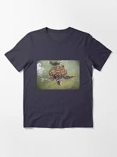
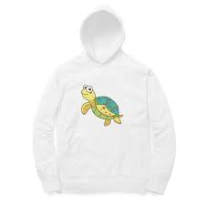
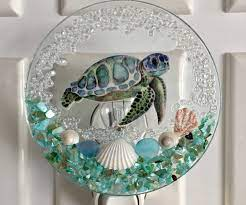
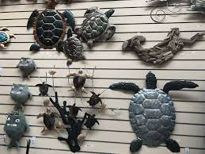
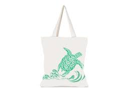

You can also help us save turtles by buying our local merchandies through our website.
As divers and snorkelers around the world know, few things rival the experience of seeing a sea turtle up close.
The enormous reptiles–the largest of which can grow up to six feet long and weigh three-quarters of a ton–glide through the water with otherworldly ease.
And on a nesting beach, one can witness the miracle of hundreds of baby turtles emerging from their buried eggs and clumsily bolting toward the surf.
Unfortunately, many of the same trends that threaten island ecosystems around the world have hit sea turtles particularly hard. Coastal development has upended many of the beaches that they nest in.
Eggs are trampled by foot traffic or eaten by pets and invasive species. Discarded fishing lines and other debris constitute a fatal entanglement or choking hazard.
And in some places, people still hunt sea turtles and gather their eggs for food. Of the seven species of sea turtle, two are critically endangered, and the rest are classified as endangered or vulnerable.
Through our website, you can help us to save turtles through making donations!
You can also help us save turtles by buying our local merchandies through our website.